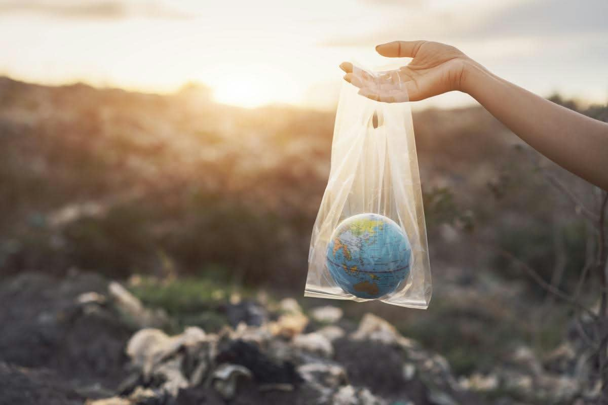

Lecturas para pensar
La Ilusión de la Abundancia: El Medio Ambiente en la Era del Consumo

Vivimos en una época en la que prácticamente todo está diseñado para ser inmediato, desechable y reemplazable. Compramos productos que caducan en poco tiempo, vestimos prendas pensadas para durar una sola temporada y consumimos tecnología que queda obsoleta en cuestión de meses. Esta dinámica acelerada nos ha llevado a vivir en una especie de "ilusión de la abundancia", donde parece que los recursos naturales del planeta son infinitos simplemente porque las tiendas y las pantallas siempre muestran oferta constante.
El verdadero problema ambiental de nuestro siglo no radica únicamente en las grandes industrias, sino en la profunda desconexión cotidiana que existe entre nuestras decisiones de consumo y su impacto directo en la naturaleza. Cada objeto que desechamos sin pensar, cada bolsa de plástico o dispositivo electrónico descartado, no desaparece por el simple hecho de tirarlo al basurero; sigue existiendo en alguna parte de la Tierra, alterando ecosistemas y acumulando contaminación.
Asumir una postura responsable con el entorno no requiere grandes discursos ni soluciones imposibles, sino un cambio de mentalidad en nuestras elecciones diarias. Pasar del modelo del "usar y tirar" hacia una cultura de consciencia, reutilización y respeto por los límites biológicos del planeta es la única vía para garantizar que los recursos básicos sigan estando disponibles para las futuras generaciones.